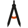
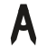
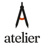
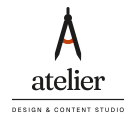

Atelier
A drafting compass standing as the letter A: the studio's tool of exact making, and the A of Atelier.
Mark

Logo system
small media → large media
mark-small

mark
horizontal
vertical

badge

short story → long story
Clear space: the hinge's diameter on every side of the mark; the mark's width between mark and wordmark in lockups
Don't
- Don't put the accent anywhere but the arc
- Don't add a frame or container around the mark (an A in a box reads as signage; round 1)
- Don't use the full mark under 32px; use mark-small
- Don't set the full word 'atelier' beside the mark in a row (reads 'A atelier'); the horizontal is the compass + 'telier'
- Don't extend the arc past the legs (it reads as a moustache; round 2b)
- Don't put the mark inside a circle or seal (reads as a lodge emblem; round 3)
- Don't lower the crossbar arc toward the feet (reads as a figure; round 3)
Colour
ink
paper
accent
Type
Atelier, made by hand
Atelier, made by hand
Atelier, made by hand
Strategy
What sets it apart
- A studio, not a tool: a named crew (Luna directs, Mika engineers, Quill writes, Lux frames, Iris builds, Patrick produces)
- A tool of knowledge: the crew works from rules, notebooks and a research brain, and vets its work before you see it
- One brand runs through every project: the home studio cascades into every repo and product
For: a founder or creator running several products and series with AI agents
Personality: crafted exacting calm generous
Noun list
workbench north-light skylight studio window grid arched doorway easel drafting compass set square ruling pen pencil brush plumb line six marks or figures guild sign maker's mark stamp or seal level check mark cascade stacked layers nested frames open book notebook library shelf lamp A logotype keyframe diamond easing curve
Rounds
| Round | Method | Shown | Picked | Misreadings |
|---|---|---|---|---|
| 1 | 10 hand-drawn SVG mocks (no image model); 3 blind viewers on the first 7, 2 on the 3 added after | A B C D E F G H I J | A: drafting compass, letter A, Freemasons' square-and-compass B: stop sign, A-grade badge, keycap C: factory roof, bar chart, tombstones D: tent, downward arrow, phallic E: pool rack, pyramid scheme, Illuminati F: tombstone G: tombstone, siren light H: drip, sperm cell, bomb I: Pixar Luxo Jr. lamp J: generic venue icon, AA sign | |
| 2 | 6 hand-drawn SVG mocks; 3 blind viewers | A B C D E F | A: drafting compass, letter A, the arc being drawn, lopsided, faint Masonic echo B: letter A, compass, keyring tag, generic A C: hazard sign, Illuminati triangle, bared teeth D: easel clip-art, gallows, hooded figure E: spirit level, toggle switch, crude figure F: Assassin's Creed A, broken letter, hood silhouette | |
| 2.5 | 3 refinements of A toward the circle-drawing compass (creator's note); 3 blind viewers | A1 A2 | A1: compass drawing a circle, clock hand, gauge needle, no-sign at 16px, lowercase a A2: drafting compass, letter A, moustache or handlebars (arc ends), Avengers A, faint Masonic echo A3: A with O, stick figure, ring at the crotch (crude, 2/3), Anarchy symbol, plumb bob | |
| 3 | one full system on A2 (founder's pick): mark, small mark, horizontal, vertical, badge x full colour, one colour, reversed; wordmark in Fraunces with Instrument Serif and Geist as alternates | system wordmark alternates | system compass-is-the-a | draft-1: low orange arc + round hinge read as a figure in underwear at 16px, compass in a circle seal = Masonic lodge emblem, A atelier stutter, mark towers over the word draft-2: arc too thin (reads as a smile), favicon knob reads as a hooded figure, two competing orange accents |